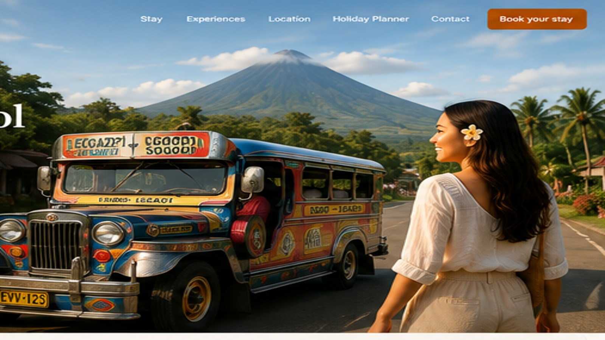

LOCAL TRANSPORT · PHILIPPINES
Ride one of the icons of the Philippines.
A jeepney is more than transport. It is noisy, colorful, practical and part of everyday Filipino life. For short and medium local journeys, riding one can be an experience in itself.
Very affordableShared local transportA real everyday experience
WHAT IS A JEEPNEY?
Public transport with personality.
Traditional jeepneys evolved from post-war utility vehicles and became one of the most recognizable forms of public transport in the Philippines. They normally follow fixed or semi-fixed routes and pick up and drop off passengers along the way.
For a visitor, the system can feel informal at first: ask where the jeepney is going, get on, pass your fare forward, and tell the driver when you want to get off.
This is not private transport. You share the ride with local passengers — and that is exactly what makes it interesting.
FARE GUIDE
One of the cheapest ways to move around.
LTFRB's published traditional public-utility-jeepney fare guide lists a ₱13 regular fare for the first 4 km and an additional ₱1.80 per succeeding kilometer. Local route and updated fare notices should always be checked when you travel.
After 4 km
+ about ₱1.80/kmPublished add-on method. Actual posted fare board applies.Per passenger
Pay individuallyKeep small PHP notes and coins when possible.HOW TO RIDE
It feels complicated only the first time.
Check the route
Ask the driver or a local person whether the jeepney goes where you need.
Bring small cash
Jeepneys are cash-based. Small notes and coins make everything easier.
Say “Para po”
A common polite way to tell the driver you want to stop.
Enjoy the experience
Do not expect a tourist coach. This is everyday Philippines.
Fare information is a reference, not a guarantee for every route. Always follow the fare matrix posted on the vehicle or current local/LTFRB rules.
TRY LOCAL LIFE
Want help taking your first jeepney?
Ask us which route makes sense for where you want to go, or combine local public transport with a guide for your first trip.
Plan my local transport